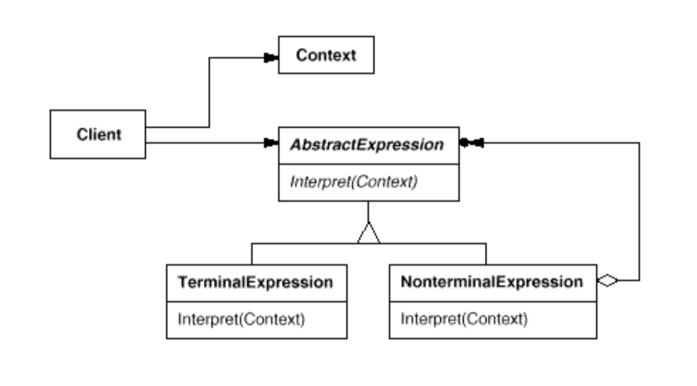

Interpreter Pattern
언어를 위한 인터프리터(해석기)를 구현한다. 우선 언어를 위한 형식 문법을 정의하고 이 문법을 클래스 계층 구조를 통해 구현한다.
구성
- Abstract Expression
- '해석(interpret)' 연산을 정의한다. 추상 문법 트리 안의 노드이다.
- Terminal Expression
- 입력으로 들어오는 터미널 기호를 위한 연산을 구현한다.
- Nonterminal Expression
- 논터미널 기호(문법 법칙)을 위한 연산을 구현한다.
- Context
- 전역 정보(예를 들어 변수값들)
- Client
- 문법이 정의된 언어의 특정 문장으로 표현한 추상 문법 트리를 빌드한다. 추상 문법 트리는 Nonterminal Expression과 Terminal Expression클래스의 instance들로 구성되어 있다.
- Interpreter 기능을 호출한다.
구조

장단점
- Interpereter패턴은 인터프리터를 구성하는 객체의 그래프(추상 문법 트리)를 어떻게 생성해야 하는지에 대해서는 아무 것도 말해 주지 않는다. 또한 인터프리터는 종종 그래프를 생성하기 위해 복잡한 파서를 필요로 하며, 이 파서는 해석 작업만을 할 뿐이다.
- 문법을 수정하는 작업이 상대적으로 단순하다. 새로운 문법 규칙을 나타내는 클래스들을 생성하기만 하면 된다.
- 문법이 많은 규칙을 지니고 있다면 적절하지 않다. 너무 많은 클래스를 필요로 하기 때문이다. JYACC, CUP과 같은 고전적인 컴파일러 툴을 사용하거나 Recursivedecent파서를 구현하기 바란다.
예제
예제 코드 보기